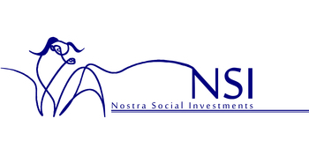

Soluciones de inversión social para corporaciones y organizaciones no gubernamentales
¿QUIÉNES SOMOS?
Nostra Social Investments (NSI) es una organización de consultoría global, proveyendo soluciones de responsabilidad social corporativa (RSC), en provecho de fortalecer comunidades y mejorar la ciudanía (ciudadanía) corporativa que tiene las empresas hoy en día. Como una organización, nos motiva una conciencia creciente de la necesidad de conciliar los intereses de negocios con las necesidades y elementos esenciales del desarrollo humano a nivel mundial. Los asesores de NSI desarrollan proyectos y administran sus servicios para el cliente de una manera que le sirva adecuadamente con atención a sus necesidades particulares, sus exigencias, y su capacidad institucional. El objetivo principal de nuestra labor es determinado por nuestro cliente más importante y grande: las comunidades subdesarrolladas.
NUESTRO ALCANCE
Al detallar nuestro compromiso con la participación de CSI global, NSI Consultants tiene una red global que abarca cuatro países (Noruega, Sudáfrica, Emiratos Árabes Unidos y Estados Unidos).NUESTRA VISIÓN
- Brindar servicios de consultoría que se ocupen de los negocios corporativos, las ONG y los organismos intergubernamentales en el tema de la responsabilidad social corporativa y proporcionar los mejores medios para utilizar plenamente los recursos tanto para las comunidades como para el propio crecimiento empresarial.
- Trabajar con el interés de diseñar un marco institucional y una red que considere que los gobiernos, las ONG, las empresas y las comunidades se comprometan constantemente y formulen intereses y valores compartidos.
- Expandir nuestra presencia para aumentar nuestro grupo de proveedores de responsabilidad social corporativa para apoyar iniciativas en todo el mundo.
- Transformar la forma en que la ciudadanía corporativa se lleva a cabo a través de un triple resultado final: el retorno de la inversión ambiental, financiero y social.
NUESTROS VALORES
- Sostenibilidad ~ Cambiar la cultura en la que las empresas, las ONG y las personas logran una atmósfera viable.
- Transparencia ~ Crear una relación confiable y gratificante entre donantes, inversores y destinatarios en cualquier proyecto dado.
- Innovación ~ Desarrollar nuevos modelos de la responsabilidad social corporativa a través de un intercambio sin fronteras de finanzas, conocimiento y recursos adicionales.
NUESTROS SERVICIOS
NSI Consultants proporciona paquetes a la medida para todas las partes interesadas en inversión social (y desarrollo) para garantizar que todas las partes cumplan con los objetivos de inversión social y de cambio social.
- Identificación de proyectos y hacer puntos de referencia para iniciativas relacionados con la responsabilidad social corporativa (RSC).
- Educación cívica y entrenamiento para empleados.
- Hacer informes sobre el desarrollo de proyectos estratégicos de RSC.
- Ayudar en la recaudación de fondos.
- Asistencia de planificación: ayuda a las ONG para maximizar los fondos de los donantes.
- Monitoreo e Informes sobre el progreso de las iniciativas de desarrollo.
¿POR QUÉ NOSOTROS?
Lo que diferencia a los consultores de NSI es que su agenda de maximización de la utilidad social depende de la transferencia global y el intercambio de recursos, finanzas y conocimiento, creando un modelo de RSI sin fronteras. Somos conscientes del hecho de que las discrepancias en la moneda y los productos básicos significan que lo que vale un monto fijo en un país, puede terminar siendo mucho más valioso en otro país, a través de la brecha económica mundial. El gasto de RSI tiene el potencial no solo de ser efectivo sino también eficiente para las partes interesadas.